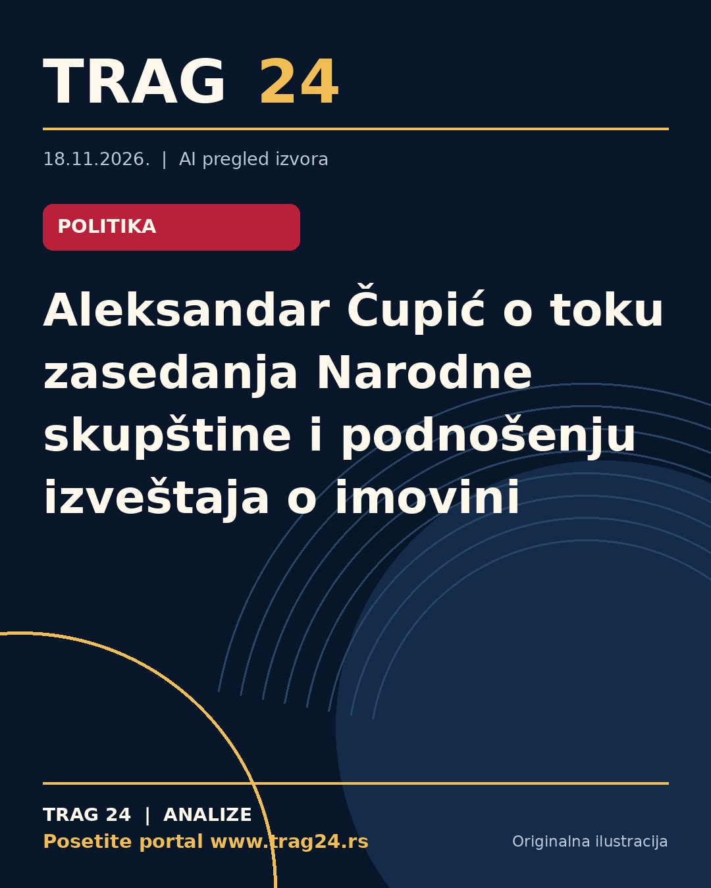

Aleksandar Čupić o toku zasedanja Narodne skupštine i podnošenju izveštaja o imovini

ŠTA SE DOGODILO
Tokom konstitutivne sednice Narodne skupštine Srbije, kandidat Studentske liste za predsednika parlamenta Aleksandar Čupić je izneo ocene o dosadašnjem vođenju zasedanja i najavio podnošenje izveštaja o svojoj imovini Agenciji za sprečavanje korupcije. Čupić je takođe kritikovao praksu dužih izlaganja i narušavanja poslovničkih normi tokom sednice, posebno naglasivši da je šef poslaničke grupe Srbije pobeđuje, Aleksandar Vučić, govorio ukupno pet sati tokom jednog dana rasprave.
HRONOLOGIJA
Konstitutivna sednica Narodne skupštine započela je prethodnog dana, a drugi dan trajala je do 18 časova, tokom kojih nije izabran predsednik parlamenta. Zasedanje će se nastaviti narednih dana. Aleksandar Čupić je na konferenciji za medije nakon sednice govorio o toku rasprave i najavio korake koje će preduzeti ukoliko bude izabran za predsednika Skupštine.
ŠTA NAVODE IZVORI
Čupić je upozorio na česte povrede Poslovnika, uključujući lične uvrede i prekoračenja vremena za izlaganje, ukazujući na nedostatak reakcija na takve događaje. On je najavio da će prestati sa takvom praksom ako bude na čelu parlamenta. Takođe je naglasio važnost ličnog mira i ravnopravnog ophođenja prema svim učesnicima u radu Skupštine. Čupić je potvrdio da će podneti izveštaj o svojoj imovini Agenciji za sprečavanje korupcije i pozvao one koji su iznosili neosnovane tvrdnje da mu se izvinu. Prvi zakon kojim bi se nova skupština bavila, prema Čupićevim rečima, biće zakon o ministarstvima sa planom za smanjenje broja ministarstava.
ŠTA JE POTVRĐENO
Potvrđeno je da je Aleksandar Čupić kandidat Studentske liste za predsednika Narodne skupštine, da je podneo izjavu o nameri da dostavi izveštaj o imovini Agenciji za sprečavanje korupcije, kao i da je jučerašnja i današnja sednica trajala duže nego što se očekivalo, sa višesatnim izlaganjem Aleksandra Vučića. Takođe je potvrđeno da nije izabran predsednik Skupštine i da će se zasedanja nastaviti.
ŠTA NIJE POTVRĐENO
Nije potvrđeno da li postoje eventualni elementi zakonskih prekršaja u izjavama drugih učesnika sednice, budući da je Čupić rekao da neće komentarisati lične tvrdnje. Takođe nije potvrđeno kada će tačno biti nastavljeno zasedanje niti ko će biti izabran za predsednika parlamenta. Nisu dostupni detalji o specifičnim povredama Poslovnika tokom sednice, niti bilo kakve odgovornosti za njih.
ŠTA OSTАJE OTVORENO: Ostaje nepoznato kako će buduća Skupština konkretno funkcionisati i na koji način će nova uprava menjati postojeće prakse u vođenju sednica. Takođe, ostaje otvoreno pitanje izbora predsednika Skupštine i konačne sastavnice nove vlade i ministarstava koje će nova Skupština uspostaviti. Nije jasno kako će se druge političke grupe i poslanici odnositi prema predlozima Studentske liste i da li će uspeti da promene postojeću parlamentarnoj praksu.
Izvori
- https://www.danas.rs/vesti/politika/cupic-vucic-stanovi/
- https://www.blic.rs/vesti/politika/aleksandar-cupic-o-sednici-skupstine-svojoj-imovini-i-vucicu/9tdz2vx
Ova analiza je pripremljena uz pomoć veštačke inteligencije na osnovu javno dostupnih izvora. Navodi izvora nisu nužno nezavisno potvrđeni.